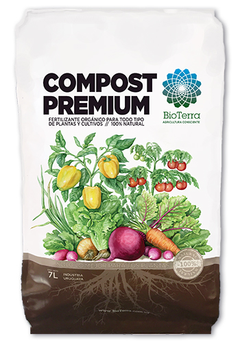
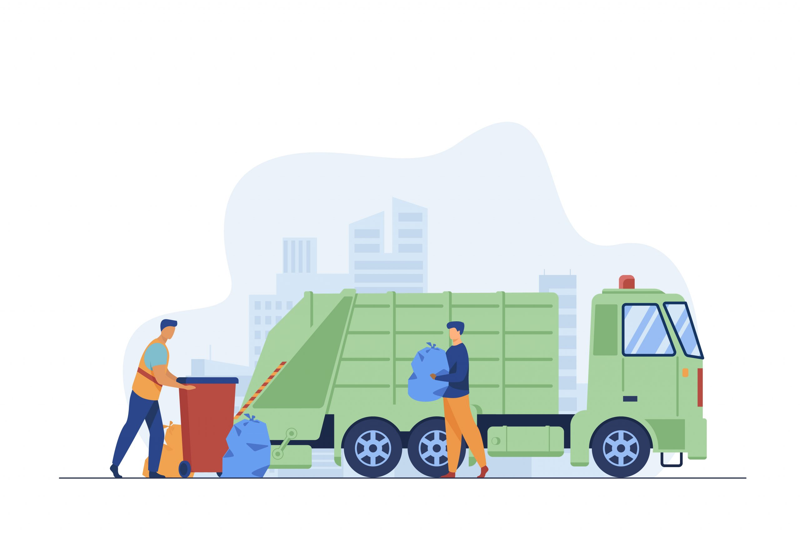

Nuestros Productos
Descubre nuestra gama de productos ecológicos que transforman tu tierra y el entorno. Ofrecemos soluciones sostenibles adaptadas a tus necesidades agrícolas.

Compost Orgánico Premium
Compost de alta calidad, ideal para mejorar la fertilidad del suelo y fomentar el crecimiento saludable de tus cultivos.
Más Información
Soluciones Agrícolas Personalizadas
Asesoramiento especializado y productos adaptados a las necesidades específicas de tu cultivo.

Servicios de Recolección de Residuos
Recolectamos tus residuos orgánicos y los transformamos en compost de calidad para ti y tu comunidad.